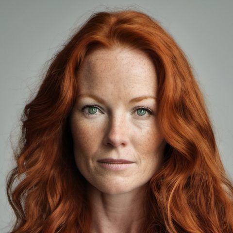
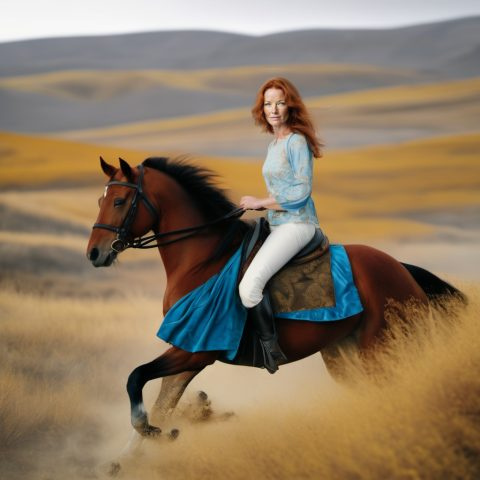
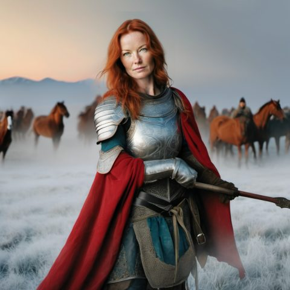
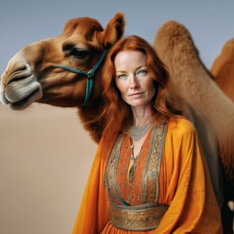
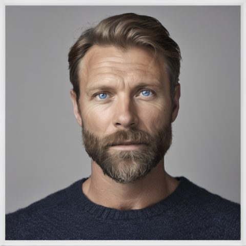
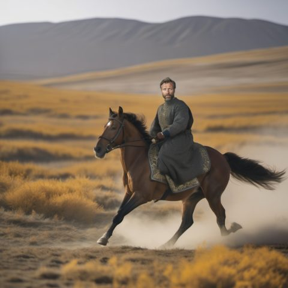
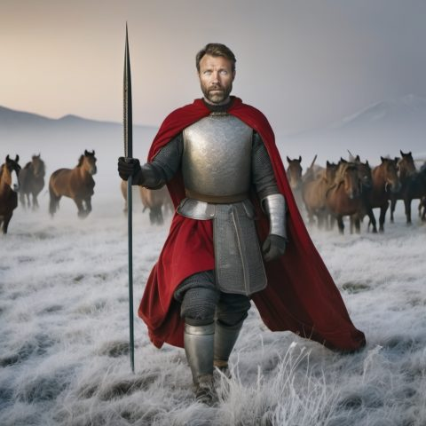
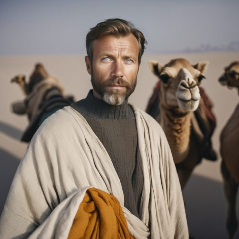

Face to image: one photo, 43 portraits. Still your face.
Upload one close-up of your face. Our AI draws you in 43 scenes of the Great Steppe (rider, warrior, khan, caravan leader, eagle hunter) and makes a 30-second video with steppe music. No prompts to write.
Before and after








The test faces above are AI-generated, not real people. Every frame comes straight from the live generator, without retouching.
Get my portraits — $9$9, one payment. Any card, any country. Ready in about 35 minutes. A free redo is included.
For SMM specialists and studios
Make content with your client's own face, without a photoshoot. One photo of your client (with their consent) becomes 43 portraits and a short video for their feed. Need it for several clients? Write to khamzinb@gmail.com and we will start with a small paid test.
How it works
- Pay $9 on Gumroad. Your receipt contains a license key. That key is your order code.
- Open the generator on your phone or computer, choose Man or Woman, upload a close-up photo of the face and paste the code.
- About 35 minutes later you get the video (MP4) and all 43 portraits (JPG). The result stays online for 72 hours, so download it.
Good to know
- No prompts. You only upload a photo; the scenes are ready.
- Your photo is deleted right after generation. We do not keep it and do not use it for anything else.
- Only a real person's own photo, 18+, with their consent. No photos of celebrities or children.
- Drawn by AI. The likeness is close but not exact, and details can differ from frame to frame. A close-up, facing the camera, even light and no sunglasses help most.
- Opening from Telegram? Tap ⋮ → Open in browser for a stable upload. If the page reloads, your order is not lost: it continues.
- Questions or problems: reply to your Gumroad receipt and we will help.
More about the set: Who Were You in the Great Steppe? · Русский · Қазақша: galymzhan.kz
Made by SUN in Astana, Kazakhstan, on our own hardware.